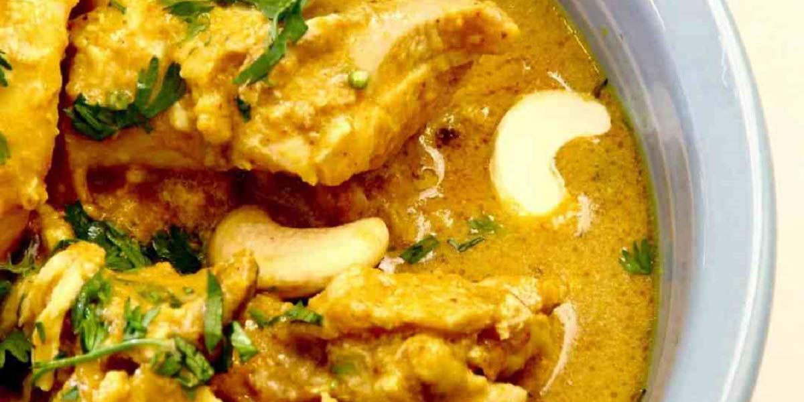

Chicken Korma
Recipe Specification
Ingredients List
| Ingredients | Quantity |
|---|---|
| Chicken Breast | 6 fillets |
| Natural Yoghurt | 50g |
| Vegetable Oil | 45ml |
| White Onions | 5x1 |
| Garlic Cloves | 6 Cloves |
| Root Ginger | 2 Inches |
| Cardamom pods | 16 pods |
| Ground Cumin | 30g |
| Ground Coriander | 30g |
| Ground Turmeric | 2 tsp |
| Dried Chilli Flakes | ½ tsp |
| Bay Leaf | 1x1 |
| Whole Cloves | 6 Cloves |
| Plain Flour | 40g |
| Caster Sugar | 20g |
| Salt & Pepper | To Taste |
| Double Cream | 90ml |
| Coriander Leveas | 40g |
| Cashew Nuts | 100g |
Yield: 6-8 portions
Preparation
- Dice chicken into 1 inch cubes.
- Peel and slice onions.
- Peel and crush garlic cloves.
- Peel and grate root ginger.
- Crush cardamom pods.
- Pick coriander leaves.
- Season yoghurt and use to marinade chicken with. Place in the refrigerator for 6-8 hours.
Cooking Instructions
- Place a medium sized saucepan over a low/medium heat and add vegetable oil. .
- Fry off the onions, ginger and garlic for 5-8 minutes until soft.
- Add crushed cardamom pods, ground cumin, ground coriander turmeric, chilli powder and bay leaf before cooking spices out for 5 minutes.
- Add flour, sugar and 1 tsp of table salt to the pan and coat onions.
- Add water to the onions and bring to the boil whilst continually stirring.
- Once onion mixture has thickened, remove from the heat, take out bay leaf and blend smooth with a stick blender.
- Return to the heat and add double cream.
- Remove excess yoghurt from chicken and then add chicken to the saucepan. Cook for 8-12 minute until chicken is tender and fully cooked.
- Remove from heat, season to taste and garnish with fresh coriander leaves and cashew nuts before serving.

Serving Suggestions
Chicken Korma goes great with naan bread, roti and steamed rice.
Storing instructions
Cool to room temperature and place in an airtight container before placing in the refrigerator. Consume within 4 days of making it.
Reheating Instructions
Place in a saucepan and slowly bring it up to temperature whilst stirring. Alternatively, place in the microwave and heat foe 3-4 minutes.